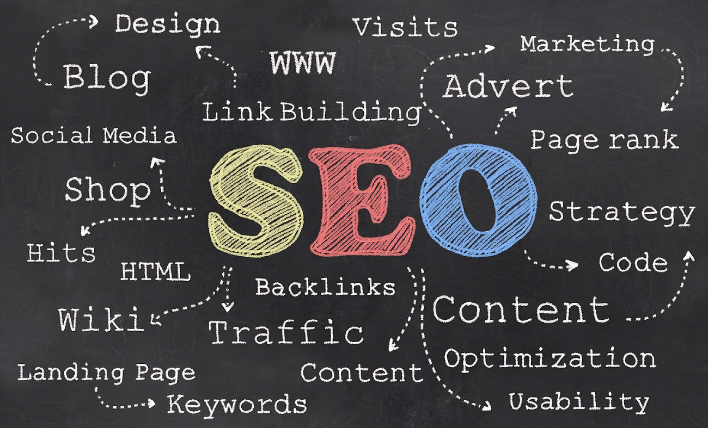

Introdução
Bem-vindo ao Blog do Estagiário em SEO! Aqui você encontrará conteúdo sobre otimização de mecanismos de busca e muito mais.
O que é SEO
SEO (Search Engine Optimization) é o conjunto de estratégias e técnicas utilizadas para melhorar a visibilidade e o posicionamento de um site nos resultados orgânicos dos mecanismos de busca, como Google, Bing e Yahoo. O objetivo do SEO é aumentar o tráfego de visitantes qualificados ao site, proporcionando maior exposição e, consequentemente, potencializando as oportunidades de conversão e vendas.
Serviços
- SEO On-page
- SEO Técnico
- SEO Of-page
Galeria de Ferramentas
O Google Search Console é uma plataforma gratuita que permite monitorar e otimizar a presença online dos sites.
O Google Analytics é o serviço oficial e gratuito de monitoramento de Marketing Digital do Google.
O Screaming Frog é uma ferramenta de SEO que permite analisar e auditar sites de forma eficiente.